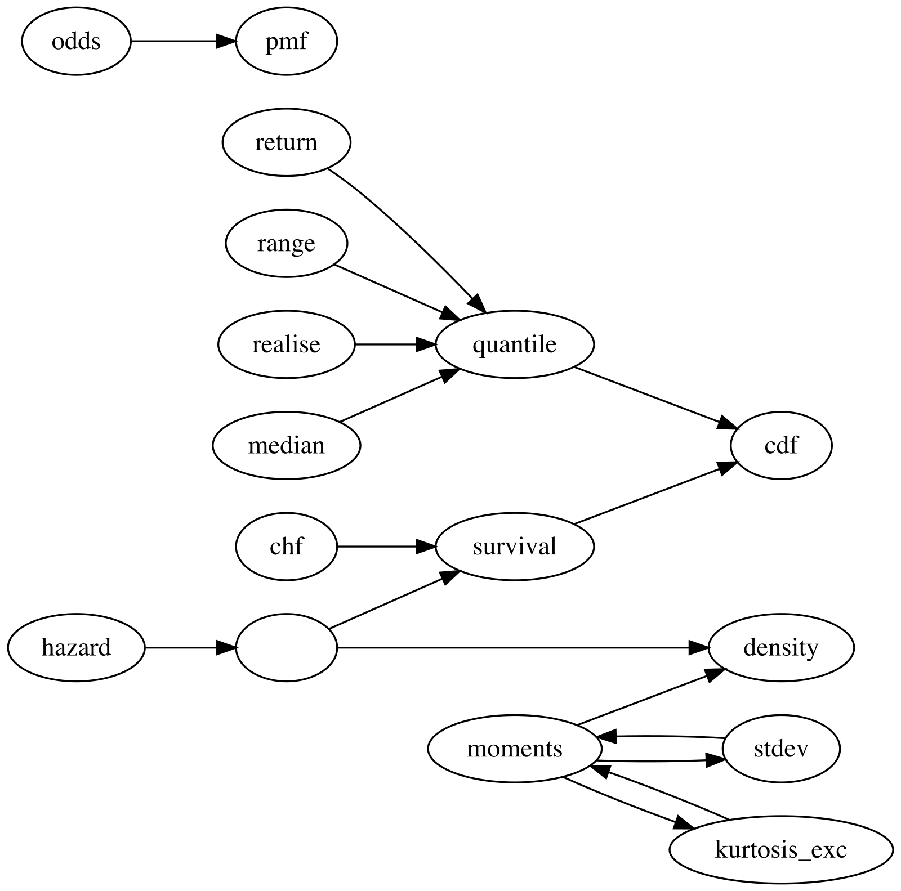

Specifying Your Own Distribution
Source:vignettes/specify-user-defined.Rmd
specify-user-defined.RmdThis vignette explains how to create user-defined distributions using
distionary.
User-Defined Distributions
You can make your own distribution using the
distribution() function. Specify distribution properties as
name-value pairs, where the name is the distribution property.
Distributional representations like the cumulative distribution
function (CDF) can be specified as functions.
my_normal <- distribution(
density = stats::dnorm,
cdf = stats::pnorm,
range = c(-Inf, Inf),
g = 9.81,
another_representation = function(x) x^2,
.vtype = "continuous"
)
# Inspect
my_normal
#> Unnamed distribution (continuous)
#> --Parameters--
#> NULLThe usual evaluation framework can now be accessed, such as evaluating the CDF.
Even though the mean has not been specified, it can still be evaluated.
mean(my_normal)
#> [1] 0Some of the specified properties are special because they correspond
to a property that’s known to distionary – in this example,
density, cdf, and range. In
general, the special names can be identified as follows:
- The suffix following
eval_for any distributional representation (e.g.,quantileforeval_quantile()). These should be specified as functions. -
realiseorrealize, which is used to generate random samples from the distribution. This should be a function of the number of observations to draw. - The same name as the
distionaryfunctions used to extract any other property (e.g.,meanformean()).
See the Evaluate a Distribution
vignette for more details on these evaluation functions and the network
of relationships between the understood properties. Note that, in the
current version, specifying a cdf along with a
density or pmf (probability mass function) is
required for evaluating non-explicit properties.
In general, properties can be invoked by the more general function
eval_property(), which is useful for accessing entries that
are not known to distionary. For example, the user-defined
property g can be accessed in this way.
eval_property(my_normal, "g")
#> [1] 9.81To use eval_property() to evaluate a function, arguments
can be specified in the ... argument.
eval_property(my_normal, "another_representation", 1:4)
#> [1] 1 4 9 16The eval_property() function is also useful for
programmatically accessing distribution properties.
properties <- c("mean", "variance")
lapply(properties, \(x) eval_property(my_normal, x))
#> [[1]]
#> [1] 0
#>
#> [[2]]
#> [1] 1Distribution Attributes
Distribution metadata are stored as attributes, and are those
arguments prefixed by . in the distribution()
function.
-
.vtype, as seen in the example starting this vignette, is used to specify the variable type, such as"discrete"or"continuous". -
.nameallows you to give the distribution a name. -
.parametersallows you to specify values for the distribution’s parameters as a list, if applicable. This version ofdistionarydoes not draw from these values, so it currently serves a similar function as the distribution’s name.
my_distribution <- distribution(
cdf = pnorm,
density = dnorm,
.vtype = "continuous",
.name = "Special",
.parameters = list(theta = 1.7, mat = diag(2), hello = "hi")
)
# Inspect
my_distribution
#> Special distribution (continuous)
#> --Parameters--
#> $theta
#> [1] 1.7
#>
#> $mat
#> [,1] [,2]
#> [1,] 1 0
#> [2,] 0 1
#>
#> $hello
#> [1] "hi"Retrieve the variable type:
vtype(my_distribution)
#> [1] "continuous"Retrieve the parameters:
parameters(my_distribution)
#> $theta
#> [1] 1.7
#>
#> $mat
#> [,1] [,2]
#> [1,] 1 0
#> [2,] 0 1
#>
#> $hello
#> [1] "hi"You can also reset the parameters with <-. Lets give
this distribution scalar parameters.
parameters(my_distribution)[["mat"]] <- 1
parameters(my_distribution)[["hello"]] <- NULL
# Inspect the distribution
my_distribution
#> Special distribution (continuous)
#> --Parameters--
#> theta mat
#> 1.7 1.0Retrieve the distribution’s name with pretty_name().
pretty_name(my_distribution)
#> [1] "Special"Names are “pretty” because they can also include the parameters in a compact way, when the parameters are scalars (which they now are):
pretty_name(my_distribution, param_digits = 2)
#> [1] "Special(1.7, 1)"Example of a New Parametric Family
If you want to create your own parametric family, such as a
distribution whose density decays linearly from x=0 to
x=a, you can do this by making a function that accepts the
distribution parameter as an input, and outputs the distribution. Note
that the CDF and density are specified, as required for continuous
distributions, and metadata are specified with the arguments starting
with ..
dst_linear <- function(a) {
# It helps to check that the parameter is valid.
checkmate::assert_number(a, lower = 0)
# We'll create some representations outside of the `distribution()`
# call for separation of concerns. Note that care is taken to ensure
# proper behaviour outside of the range of the distribution.
density <- function(x) {
d <- 2 / a^2 * (a - x)
d[x < 0 | x > a] <- 0
d
}
cdf <- function(x) {
p <- x / a^2 * (2 * a - x)
p[x < 0] <- 0
p[x > a] <- 1
p
}
# Create the distribution.
distribution(
density = density,
cdf = cdf,
range = c(0, a),
.vtype = "continuous",
.name = "Linear",
.parameters = list(a = a)
)
}Notice how the distribution metadata gets printed with the distribution.
dst_linear(3)
#> Linear distribution (continuous)
#> --Parameters--
#> a
#> 3Here are the density plots of different members of this family.
plot(dst_linear(1), to = 4, col = "purple")
plot(dst_linear(2), add = TRUE, col = "red")
plot(dst_linear(4), add = TRUE, col = "blue")
legend(
"topright",
legend = c("a = 1", "a = 2", "a = 4"),
col = c("purple", "red", "blue"),
lty = 1
)
As usual, properties can be evaluated, even if they are not specified. Consider, for example, calculating return periods of three different Linear distributions.
enframe_return(
model1 = dst_linear(1),
model2 = dst_linear(2),
model3 = dst_linear(4),
at = c(2, 5, 10, 20, 50, 100),
arg_name = "return_period"
)
#> # A tibble: 6 × 4
#> return_period return_model1 return_model2 return_model3
#> <dbl> <dbl> <dbl> <dbl>
#> 1 2 0.293 0.586 1.17
#> 2 5 0.553 1.11 2.21
#> 3 10 0.684 1.37 2.74
#> 4 20 0.776 1.55 3.11
#> 5 50 0.859 1.72 3.43
#> 6 100 0.900 1.80 3.60Network of Properties
The key innovation in distionary is its network-based
approach to probability distributions. Different distributional
representations (CDF, PDF/PMF, quantile function, survival function,
etc.) are interconnected through a network of mathematical
relationships.
The diagram below shows how distionary derives
distribution properties from other properties. An arrow from one
property to another indicates that the first property can be calculated
from the second. For example, quantile can be calculated
from cdf, and mean can be calculated from
density. This network structure is what allows you to
define a custom distribution with just one or two representations (like
cdf and density in the example above) and
still have access to all other properties.

Making your own properties
Some properties are easy to make yourself. Here is an example of a function that calculates interquartile range.
# Make a function that takes a distribution as input, and returns the
# interquartile range.
iqr <- function(distribution) {
diff(eval_quantile(distribution, at = c(0.25, 0.75)))
}Apply the function to a Linear distribution as defined before.
iqr(dst_linear(2))
#> [1] 0.7320508For properties that are not handled by distionary (e.g.,
extreme value index, or moment generating function), one option is to
build these properties into your own distribution. A future version of
distionary will make user-defined properties easier to work
with.
Limitations
The distionary package is still young. Lots of helpful
features are still missing, and your patience is appreciated as more
features are developed. Some examples follow.
| # | Limitation | Explanation |
|---|---|---|
| 1. | When a user-specified distribution isn’t continuous (e.g., is
discrete), only the properties specified in distribution()
can be accessed in this version. |
Specifying the set of possible outcomes for discrete distributions requires special attention, particularly when there are infinitely many of them. |
| 2. | Representations are not checked for accuracy in this version. | While this is done in the test suite for the built-in distributions, additional levels of detail are required when accepting a foreign distribution. |
| 3. | Typos when specifying distribution property names
(e.g. densty instead of density) or variable
type (e.g., "contnous" instead of
"continuous") will not trigger an error. |
The package does not assume that distribution properties and types are limited, allowing for flexibility. |
| 4. | It is currently assumed that the distributional representations are specified in a way that remains valid beyond the range of the distribution. | A future version aims to use the specified range to automatically implement appropriate behavior. |